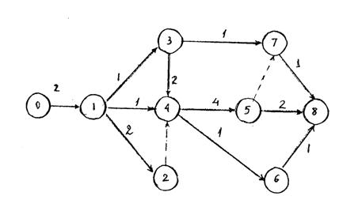
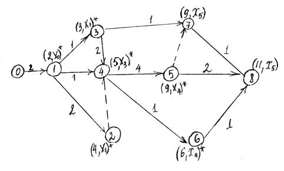
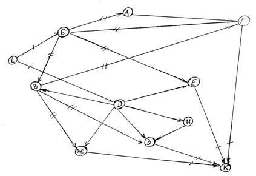

В задачах планирования сложных процессов, где много разных параллельных и последовательных работ, часто используют взвешенные графы. Их еще называют сетью ПЕРТ (PERT).
PERT (Program (Project) Evaluation and Review Technique)
техника оценки и анализа программ (проектов), которую используют при управлении проектами.
Сеть ПЕРТ — взвешенный ациклический ориентированный граф, в котором каждая дуга представляет работу (действие, операцию), а вес дуги — время, которое нужно на ее выполнение.
Если в сети есть дуги (a, b) и (b, c), то работа, представленная дугой (a, b), должна быть завершена до начала выполнения работы, представленной дугой (b, c). Каждая вершина (vi) представляет момент времени, к которому должны быть завершены все работы, задаваемые дугами, оканчивающимися в вершине (vi).
В таком графе:
одна вершина, у которой нет предшественников, определяет время начала работы
одна вершина без последователей соответствует моменту завершения комплекса работ.
Путь максимальной длины между этими вершинами графа называется критическим путем. Чтобы выполнить всю работу быстрее, нужно найти задачи на критическом пути и придумать, как их выполнить быстрее. Например, нанять больше людей, перепридумать процесс или ввести новые технологии.

рис.13
Числа над работами указывают их продолжительность.
Используя метод Форда вычисляем длиннейший путь графа, который определяет самую длительную технологическую цепочку, а следовательно кратчайший срок выполнения задания.

рис.14
На рисунке отмечены конечные метки для каждой вершины (работы) и критический путь продолжительность которого равна 11 мес. Таким образом, ранний срок завершающего события равен 11 мес.
Работы в сетевом графике должны быть упорядочены по циклам (слоям). Существуют разные способы разбиения на слои. Например, можно выделить слои в графе исключением «потоков».
Пример. Дан граф. Требуется перенумеровать вершины графа.

рис.15
Решение:
1) Выделяем вершины, не имеющие предков (нет входящих дуг), определяем вершины из -го слоя (цикла). Это вершина L. Вычеркиваем выходящие из вершины l дуги. Получим подграф (граф без вершины E,D и L ).
2) Выделяем в подграфе вершины, не имеющие предков (входящих дуг). Это вершины Б и D. Они образуют 2-ой слой. Вычеркнем дуги, выходящие из вершин Б и D и рассматриваем подграф (граф без вершин Б,D и L).
3) Вновь выделяем вершины, не имеющие входящих дуг. Это A,B, E,И (образуют третий слой). Вычеркиваем дуги выходящие из этих вершин.
4) Далее находим вершины четвёртого слоя Г, Ж,З и в последний слой попадает вершина К.
Построим граф и перенумеруем вершины. Внутри слоя безразличен порядок нумерации. Вершины внутри каждого слоя не связаны.